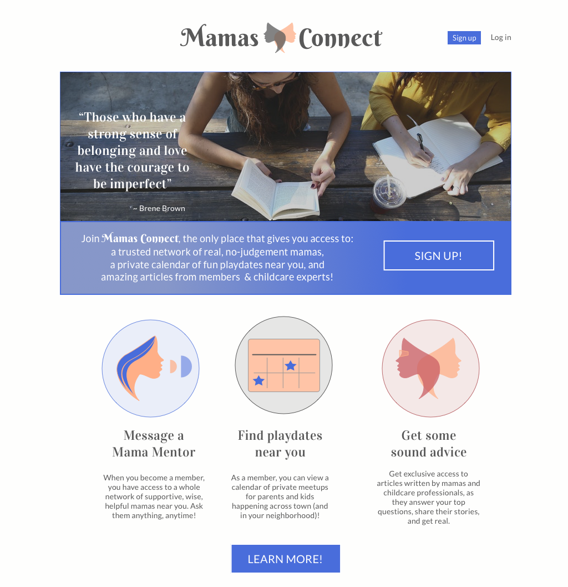
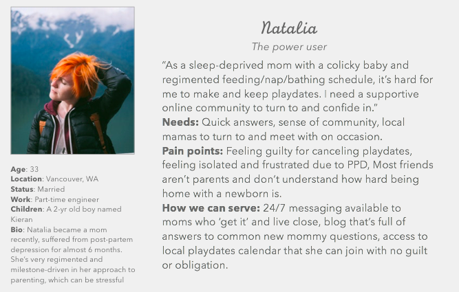
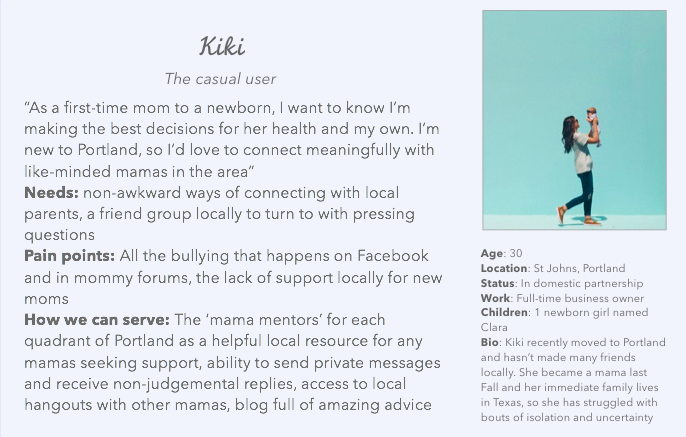
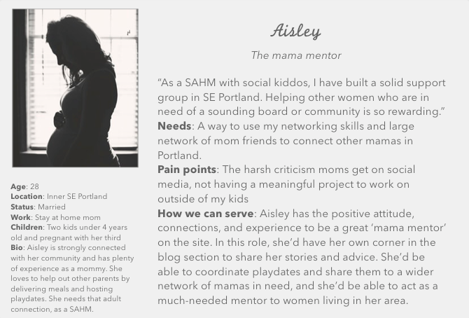
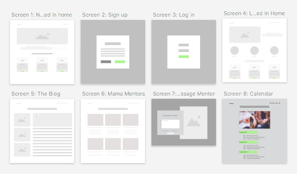
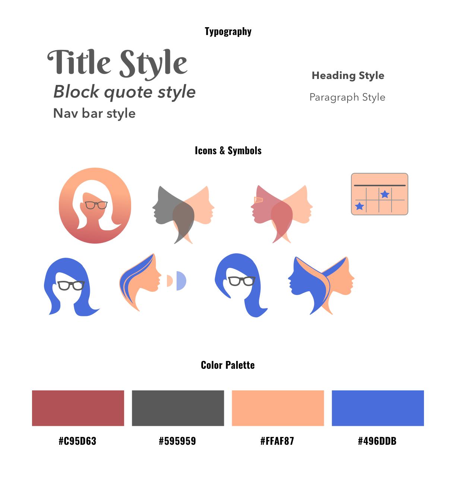
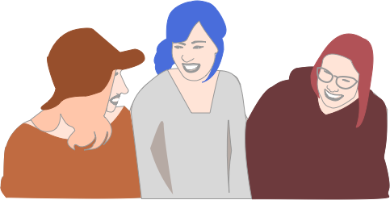

Mamas Connect
A trusted place for new mamas to be themselves and connect with supportive mentors in their community
About
I set out to create an app that helps new moms who are feeling isolated to connect more effectively online and in-person with 'mama mentors' near them. My goal is to meet the need that new moms commonly have for community and non-judemental connection. This app is currently in production and set to launch in 2018, with MVP features of a messaging center, blog with posts contributed by 'mama mentors' and childcare experts, and a live calendar of mama meetups and kid-friendly events.
Process
Research & User Stories: My design process began with a list of questions for "new moms" (moms who have at least one child under age three) that I asked during in-person interviews and over Survey Monkey. The questions focused on top needs as a new mom, media consumption preferences, and ideal product features. From there, I developed three user personas based on who I see as a power user, casual user, and 'mama mentor' user of the website.
  Wireframing: First with pencil and paper, then in Sketch, I wireframed a user's flow through the application. I wanted to keep each page simple, with one main task per screen. I sketched out all the main screens a user navigates through from account set up and log in to messaging a mama mentor or reading blog posts.
Typography, Color Palette, and Icon Creation: I found my fonts on Google Fonts, and iterated on my choices a couple times based on the feedback I got from a few other designers. Ultimately, I made font and color choices that were inviting, positive, warm, and slightly modern. I had so much fun making my own icons and a vector drawing of mama friends in Sketch, drawing inspiration from photos I found on Unsplash.com.
 Technologies used: SurveyMonkey.com, Sketch, inVision, Unsplash.com, Google Fonts, Angular, Firebase